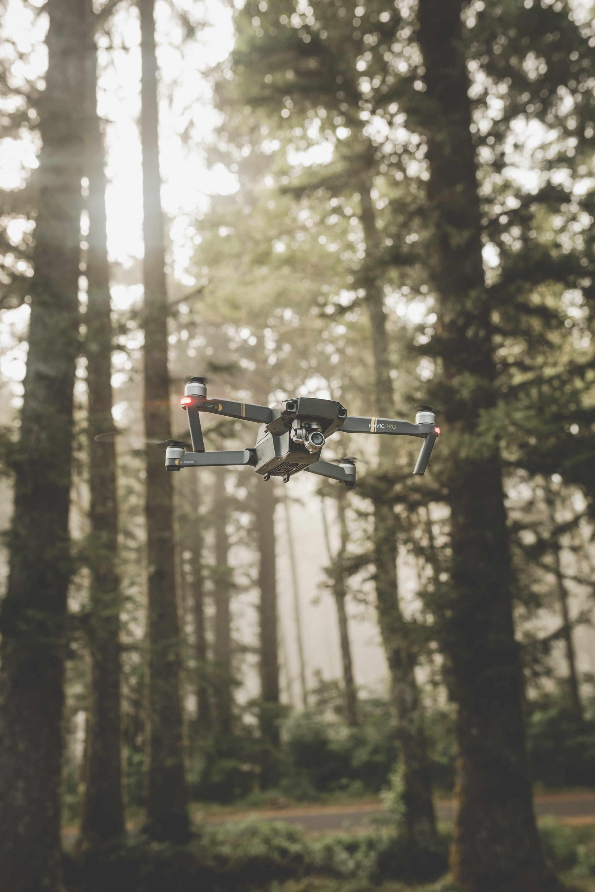

항공기와 경량항공기 외에 공기의 반작용으로 뜰 수 있는 장치로써 자체중량, 좌석 수 등 국토교통부령으로 정하는 기준에 해당하는 동력비행장치, 행글라이더, 패러글라이더, 기구류 및 무인비행장치 등을 말합니다.
무인비행선가스기구와 같은 기구비행체에 스스로의 힘으로 움직일 수 있는 추진 장치를 부착하여 이동이 가능하도록 만든 비행체이며 추진 장치는 전기식 모터, 가솔린 엔진 등이 사용되며 각종 행사 축하비행, 시범비행, 광고에 많이 쓰인다(무게 180Kg 이하 및 길이 20미터 이하로 제한함).
